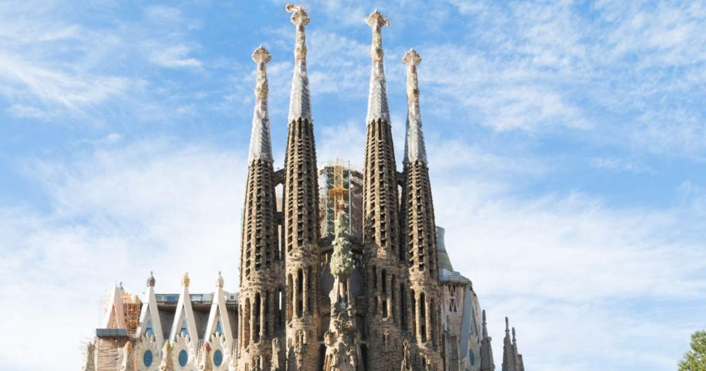

사그라다 파밀리아 성당
사그라다 파밀리아 성당은 스페인 바르셀로나에 짓고 있는 로마 가톨릭 성당이다.
또한 '사그라다'는 스페인어로 신성한 또는 성스러운이라는 뜻을 가졌으며, 파밀리아는 가족을 뜻하기 때문에 성가족성당이라고도 불린다.
카탈루냐 출신의 건축가 안토니 가우디가 설계하고 직접 건축을 책임졌다.
이 건물에 대한 가우디의 작업은 유네스코 세계 문화 유산의 일부이며, 2010년 11월 교황 베네딕토 16세는 성당에서 준 대성당으로 승격을 선포했다.